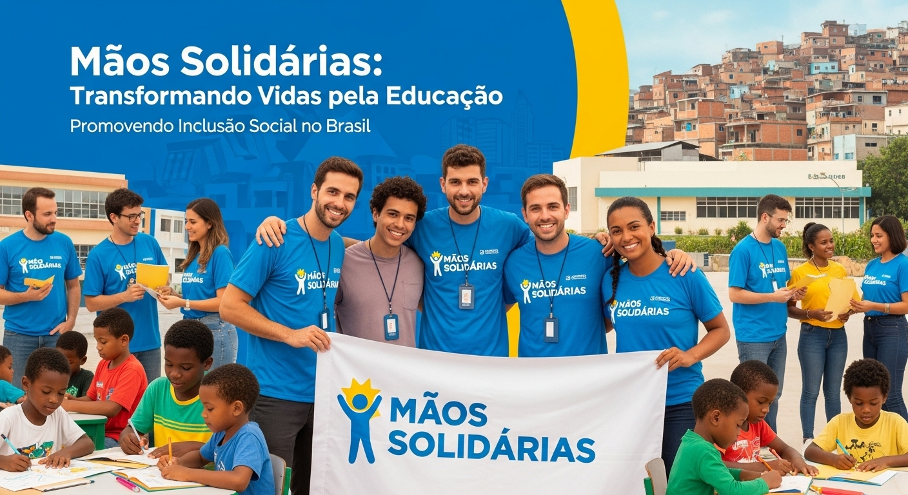

ONG Mãos Solidárias: Transformando Vidas pela Educação
Acreditamos que a educação é a ferramenta mais poderosa para a mudança. Nossa missão é promover a inclusão social e criar oportunidades para crianças e jovens em comunidades carentes por todo o Brasil.
Conheça Nossos Projetos

Nossos Projetos
Aqui você poderá ver um resumo dos nossos principais projetos. Estamos a trabalhar para adicionar os cartões responsivos em breve!